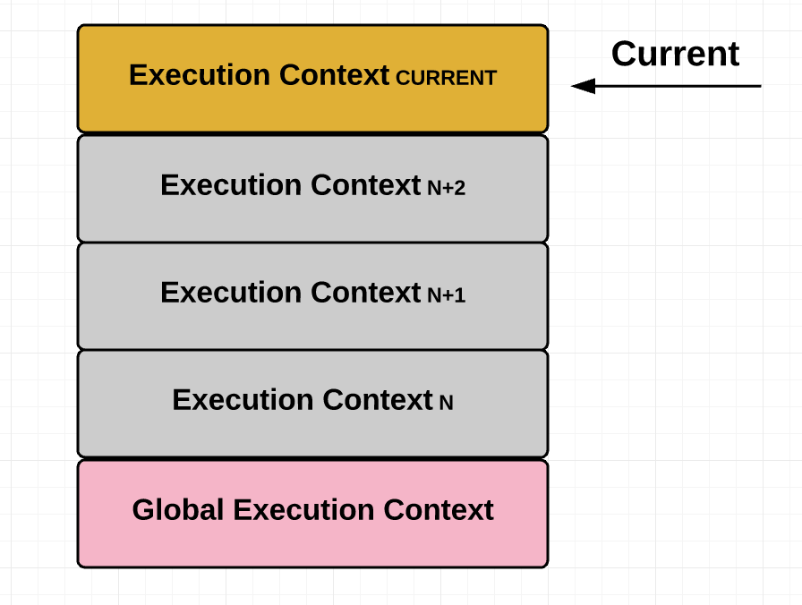

從此不再怕 hoisting。
簡述
簡單來說，JavaScript 雖然被稱作「直譯式語言」，但你不要真的把它想成是「一行一行執行」，因為如果真是如此的話 hoisting 的行為是很不合理的，例如說：
1 | console.log(a) |
輸出結果會是 undefined 而不是 ReferenceError: a is not defined，這個是 hoisting 的行為大家都知道，但重點是如果 JS 真的是一行一行執行的話。在執行 console.log(a) 的時候怎麼可能會知道後面有宣告 a？
所以其實 JavaScript 是有「編譯」這個動作的。待會要談的 EC（Execution-Contexts）就是在談編譯階段時 JavaScript 到底都做了什麼？
附註：這邊的編譯說法很有可能是錯的，會這樣說是因為我認為這樣子思考會比較好理解，所以你如果發現這是不對的話，不要太認真，確實就是我寫的不對。
關於 EC
可以把 Execution-Contexts（執行環境）想成是一個箱子，裡面有個叫做 VO（Variable Object）的東西會儲存執行階段時所需的資訊。
每次進到一個 function 裡就會產生一個 EC，按照順序「堆疊（Stack）」，參考這張圖：

寫成程式碼會像這樣：
1 | // 最外層會先產生一個 global EC |
每個 EC 裡面都會有自己的 VO，那 VO 實際上到底裝什麼？直接來看例子：
1 | function test(a, b) { |
在 test 中的 VO 就長這樣：
1 | test EC: { |
所以在執行 test 的時候，碰到 console.log() 時就會到 VO 裡面去找資源，換句話說，VO 裡面沒有的東西，你就存取不到（嚴謹一點來說是按照 scope chain 往上找，直到找不到為止）。關於 scope chain 的機制，可以參考這篇：從 ECMAScript 來理解閉包與作用域的原理
那東西是怎麼放到 VO 裡面的？記住這些原則：
- function 優先
- 接著是 function 的參數，如果參數有值的話就儲存，沒有的話就設為
undefined - 最後是 variable，一律設為
undefined
另外就是重複出現的時候該怎麼辦？我們一個一個來看：
- variable 會被忽略
1 | function test(a, b) { |
1 | test EC: { |
在第一個 console.log(a) 的時候，VO 中的 a=10，所以印出 10。到了第二個 console.log(a) 的時候，a 因為在上一行被重新賦值，所以 a=100 最後印出 100。
這邊要強調的是 Variable 在 VO 初始化時，不會把原本的 a:10 覆寫成 a:undefined 而是被忽略。
- function 會直接覆寫
1 | function test(a, b) { |
在碰到 functino 前的 VO 是長這樣：
1 | test EC: { |
但碰到 function 後會變這樣：
1 | test EC: { |
這裡的 Function 想成是指標就好，實際儲存的是記憶體位置。
所以你只要知道編譯完後的 VO 長什麼樣子，就絕對不會搞錯 hoisting 的行為是什麼。
最後一塊拼圖 LHS 賦值 & RHS 查詢值
剛剛講的是編譯階段，現在來講「執行階段」。
執行階段中有兩個術語，分別是：
- LHS（Left hand side）引用
- RHS（Right hand side）引用
簡單來說 LHS 就是「請幫我去找這個變數的位置在哪裡，因為我要對它賦值，RHS 則是「請幫我去找出這個變數的值，因為我要用這個值。
1 | var a = 10 |
Line1 var a = 10
JS 引擎：global scope，我這裡有個對 a 的 LHS 引用，你有看過它嗎？
執行結果：scope 說有，所以成功找到 a 並且賦值
Line2 console.log(a)
JS 引擎：global scope，我這裡有個對 a 的 RHS 引用，你有看過它嗎？
執行結果：scope 說有，所以成功返回 a 的值
不再畏懼 hoisting
你只要掌握了「編譯階段」是怎麼初始化的？還有「執行階段」是怎麼執行的？我相信任何跟 hoisting 有關的問題都不再是問題，最後讓我們來從頭到尾演練一次看看：
1 | var a = 1; |
我們先從 VO 開始：
1 | // global |
接著來一行一行執行：
Line1 var a = 1
JS 引擎：global scope，我這裡有個對 a 的 LHS 引用，你有看過它嗎？
執行結果：global scope 說有，所以成功找到 a 並且賦值（a=1）
Line16 test()
JS 引擎：global scope，我這裡有個對 test() 的 RHS 引用，你有看過它嗎？
執行結果：global scope 說有，所以成功找到 test() 並執行 function
Line3 console.log(‘1.’, a)
JS 引擎：test scope，我這裡有個對 a 的 RHS 引用，你有看過它嗎？
執行結果：test scope 說有，所以成功找到返回 a 的值（undefined）
Line4 var a = 7
JS 引擎：test scope，我這裡有個對 a 的 LHS 引用，你有看過它嗎？
執行結果：test scope 說有，所以成功找到 a 並且賦值（a=7）
Line5 console.log(‘2.’, a)
JS 引擎：test scope，我這裡有個對 a 的 RHS 引用，你有看過它嗎？
執行結果：test scope 說有，所以成功找到返回 a 的值（7）
Line6 a++（a = a + 1）
JS 引擎：test scope，我這裡有個對 a 的 RHS 和 LHS 引用，你有看過它嗎？
執行結果：test scope 說有，所以成功找到返回 a 的值（7），並且賦值（7 + 1 = 8）
Line7 var a
這一行沒有做任何事，所以不做任何動作。
Line8 inner()
JS 引擎：test scope，我這裡有個對 inner() 的 RHS 引用，你有看過它嗎？
執行結果：test scope 說有，所以成功找到 inner() 並執行 function
Line11 console.log(‘3.’, a)
JS 引擎：inner scope，我這裡有個對 a 的 RHS 引用，你有看過它嗎？
執行結果：inner scope 說沒有，所以去問上一層的 test scope
JS 引擎：test scope，我這裡有個對 a 的 RHS 引用，你有看過它嗎？
執行結果：test scope 說有，所以成功找到返回 a 的值（8）
Line12 a = 30
JS 引擎：inner scope，我這裡有個對 a 的 LHS 引用，你有看過它嗎？
執行結果：inner scope 說沒有，所以去問上一層的 test scope
JS 引擎：test scope，我這裡有個對 a 的 LHS 引用，你有看過它嗎？
執行結果：test scope 說有，所以成功找到 a 並且賦值（a=30）
Line13 b = 200
JS 引擎：inner scope，我這裡有個對 b 的 LHS 引用，你有看過它嗎？
執行結果：inner scope 說沒有，所以去問上一層的 test scope
JS 引擎：test scope，我這裡有個對 b 的 LHS 引用，你有看過它嗎？
執行結果：test scope 說沒有，所以去問上一層的 global scope
JS 引擎：global scope，我這裡有個對 b 的 LHS 引用，你有看過它嗎？
執行結果：global scope 說沒有。
這邊會有兩種結果：
- 非嚴格模式：把 b 加到 global EC 中並設值為
200 - 嚴格模式：
ReferenceError: b is not defined
Line9 console.log(‘4.’, a)
JS 引擎：test scope，我這裡有個對 a 的 RHS 引用，你有看過它嗎？
執行結果：inner scope 說有，所以成功找到返回 a 的值（30）
Line17 console.log(‘5.’, a)
JS 引擎：global scope，我這裡有個對 a 的 RHS 引用，你有看過它嗎？
執行結果：global scope 說有，所以成功找到返回 a 的值（1）
Line18 a = 70
JS 引擎：global scope，我這裡有個對 a 的 LHS 引用，你有看過它嗎？
執行結果：global scope 說有，所以成功找到 a 並且賦值（a=70）
Line19 console.log(‘6.’, a)
JS 引擎：global scope，我這裡有個對 a 的 RHS 引用，你有看過它嗎？
執行結果：global scope 說有，所以成功找到返回 a 的值（70）
Line20 console.log(‘7.’, b)
（假設這邊是非嚴格模式）
JS 引擎：global scope，我這裡有個對 b 的 RHS 引用，你有看過它嗎？
執行結果：global scope 說有，所以成功找到返回 b 的值（200）
關於 let 與 const 的 Temporal Dead Zone(TDZ)
其實就跟 var 宣告的變數一樣，let 跟 const 在編譯階段的時候一樣會被放到 VO 裡面，但不會被設成 undefined，這是最重要的差別，例如說：
1 | function test() { |
初始化的 EC 長這樣：
1 | test EC{ |
因為 VO 中的 a 沒有值，所以跑到 console.log(a) 的時候會直接 ReferenceError: Cannot access 'a' before initialization。
在執行到 let a = 10 這行之前就叫做「Temporal Dead Zone(TDZ)」，只要在 TDZ 期間去存取變數都會直接噴錯，其實就只是這樣，不用被專有名詞嚇到，let 跟 const 一樣有 hoisting 的行為，沒有例外。
結尾
其實這篇筆記寫的有點混亂，可能是我還不夠熟悉吧，但目前我所知道的就是這樣，之後等我更理解後再來慢慢補齊。
另外還想補充的一點是，function 之所以能夠互相呼叫就是透過「編譯階段產生的 VO 」來達成的，有了 VO 後 function 就可以參考 VO 去呼叫另外一個 function，像這樣：
1 | function a() { |
1 | global EC{ |
大概就是這樣，其他的等以後再補吧～